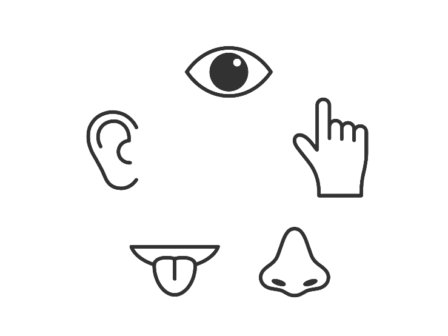
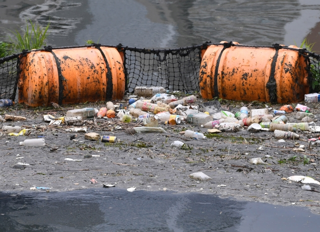
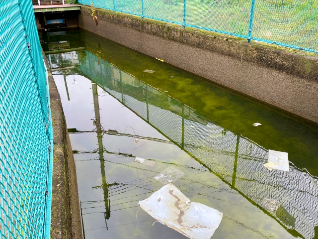
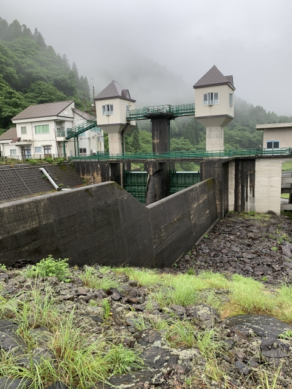
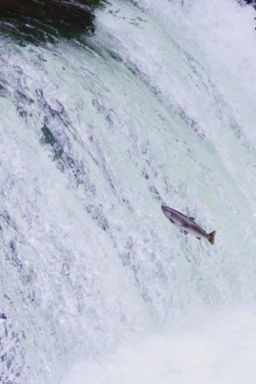
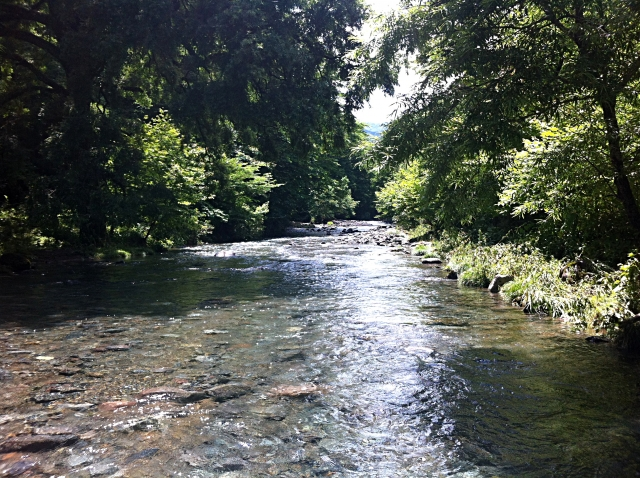
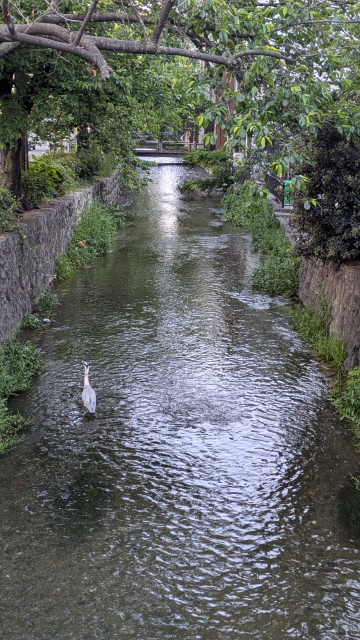

市民調査に参加する
身近な水辺を観察して、その情報を地域の水環境データとして共有しましょう。

五感を使って水を観察する
水の色、におい、透明感など、まずは五感を使って身近な水環境を観察してみましょう。 さらに測定機器などを使うことで、さまざまな水質項目を記録できます。
「水のきれいさ」の項目
調査基準- 調査方法：川底の砂などがしっかりと見える
- 影響する要因：生活排水や事業活動などの長期的な人間の活動・プロジェクト、流域からの泥などの流入。
- 大切な理由：pHなどだけではなく、川底の生き物を調べると、川のきれいさがより深く理解できます。
例えば、ザリガニが見つかった場合、川は昔から汚かったと判断できます。
詳しくは、こちらから

「水はドブ臭さ」の項目
調査基準- 調査方法：水の近くや水のサンプルを嗅いでもイやなにおいがしない。
- 影響する要因：付近の町から有機物が漏れ出ている/川が流れないので、有機物などの汚れが溜まってしまう。
- 大切な理由：生物が生きにくくなっているサインとなります
においがひどいのは、BODという値が高くなっているためです。 BODとは、微生物が有機物などを分解し食べるときに消費する酸素量のことです。 この値が高いと、水には酸素が足りなくなり、細菌などが大量に発生します。 もちろん、これらの細菌は生き物にとって有害なのです。

「水の流れの速さ」の項目
調査基準- 調査方法：川に葉っぱを投げ入れると流れていく。波が見える。
- 影響する要因：ダムなどの人工物や坂、前日の雨など
- 大切な理由：川の循環を生みます。
川が流れないと、汚れや有機物が溜まってしまい、水がいつまでたってもきれいになりません。 特に下流（町などを流れる川）の流れは悪くなりやすです。 また、川の流れが一定でないと、魚にとっては定住しにくくなります。 ダムの建設は便利ですが、思わない形で魚たちの生活に影響を及ぼしているのです。

「生き物の種類」の項目
調査基準- 調査方法：双眼鏡を使って見るか、携帯電話のカメラを使って写真を撮影してみましょう。 その後、インターネットや図鑑を使って調べてみましょう
- 影響する要因：草むらがあると昆虫を魚や鳥は食べられるので、たくさんの生き物がいるでしょう。 また近くに木々があれば、鳥たちは巣作りをするかもしれません。 ぜひ、インターネットで近くの生き物を調べてみましょう。
- 大切な理由：生き物のバランスを守る
川や湖を含む自然環境は、「バランス」によって成り立っています・ そのため、どれか一種類でも急に多くなったり、少なくなったりすると、大きな影響が出てしまいます。 例えば、川の周りの草をすべて刈り取った場合、昆虫たちは生きていけなくなってしまいます。 昆虫たちが減ると、それを食べる魚や鳥も、生きていけなくなってしまいます。 これは、近年の温暖化ともつながります。 プランクトンなどの小さな微生物は、すべての生き物が生きていける土台を作っています。 しかし、温暖化によりプランクトンの数は確実に減っています。 これが続けば、人間を含むすべての生き物は生きていけなくなってしまいます。

「水の周の静かさ」の項目
調査基準- 調査方法：川の周りで耳を澄ませて、生き物の音や川のせせらぎが聞こえるか検証してみましょう。
- 影響する要因：近くで交通量が多かったり、電車が通っている。
- 大切な理由：生き物のバランスを守る
「ノイズポリューション」という言葉があります。 日本語では、「騒音公害」ともいうこの言葉は、生き物にとって不快な音が日常の生活に満ち溢れていることを意味します。 うるさい音は生き物にとって、大きなストレスとなります。 ストレスのせいで、うまく子供を産めなかったり、子供が卵からかえることができなくなってしまいます。 これは、生き物の種類や数を減らしてしまい、環境にとって大きな影響を及ぼします。


もっと見る
五感観察
色、におい、見た目、周囲の環境などを観察して記録します。
基本観察pH
水が酸性・中性・アルカリ性のどの程度なのかを示す指標です。
任意項目DO
水中に溶けている酸素の量です。水中の生物の生息環境を考える際に重要です。
任意項目COD75
水中の有機物などによる汚れの程度を評価するために使われる指標です。
任意項目BOD75
微生物が水中の有機物を分解するときに消費する酸素量に関係する指標です。
任意項目SS
水中に浮遊している粒子状物質の量を示す指標です。水の濁りとも関係します。
任意項目気温などを検索できます。ぜひご活用ください
※ 測定項目について： pH、DO、COD75、BOD75、SSなどの測定は任意項目です。 無理のない範囲で、安全に配慮して調査してください。
調査結果を送信する
以下のWebフォームから直接回答・送信できます。